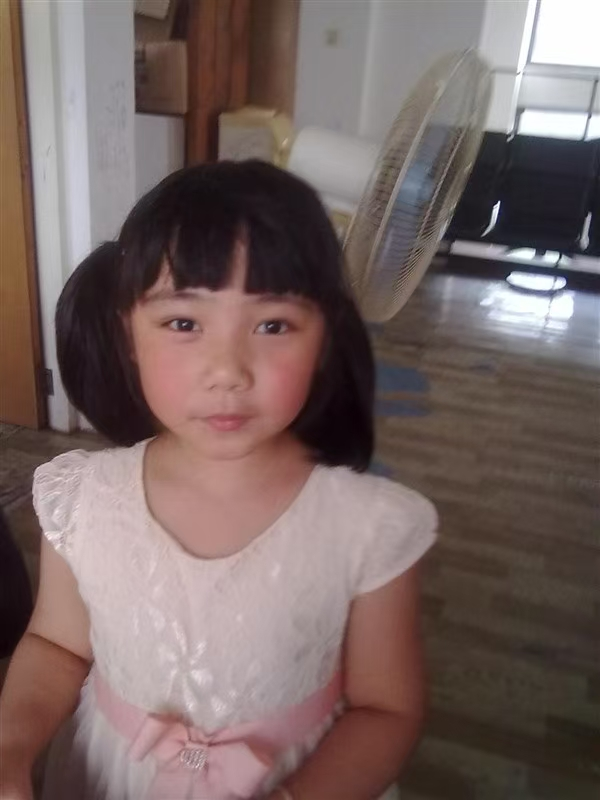
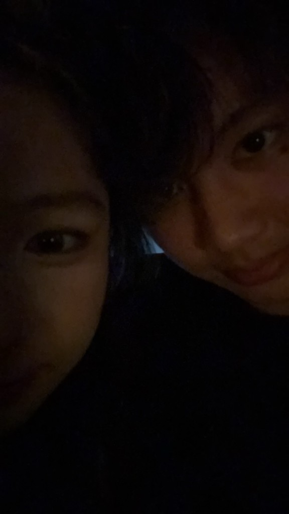

// NEURAL LINK ESTABLISHED
时光通讯 · 第 0 章
故事地图已解锁，点击回溯时间
按 Enter 或点击开始
▸ 今天是 6 月 13 日，你的生日。你在街角的旧货摊发现了一部奇怪的手机——
▸ 外壳上刻着一行小字：Sela's Land — 只给 Rex
你感觉到脚下的实地忽然抽空。
你坠下去。黑暗没有底。
紧接着是刺骨的淹没——像整个人被扔进深水里。你睁不开眼，耳边的世界钝成一团闷响。
然后，你听见了一个声音。是你自己的。
「……要是我能在你小时候就认识你就好了。」
你朝前游。光一点一点灭尽。
▸ 再睁眼，你坐在一家旧式茶餐厅里。
▸ 墙上的字样透过油烟和反光，只剩下隐约的轮廓——敏华。
▸ 这名字熟得奇怪，你却怎么也想不起在哪见过。
▸ 你低头检查自己：干爽的，舒适的。刚才那场溺水像从未发生。
▸ 你兜里那部刻着 Sela's Land 的旧手机震了一下——一条短信，一个陌生坐标。
▸ TIME: 2017 · AGE: 10 · LOCATION: 上海
▸ 一条新消息弹了出来……


// 选择你的回复
CHAPTER 01 · COMPLETE
时光链路暂时休眠……